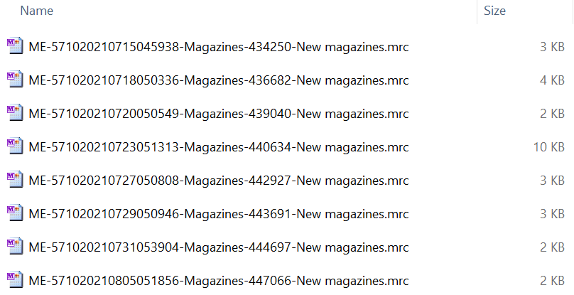
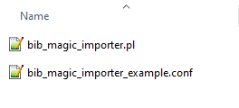
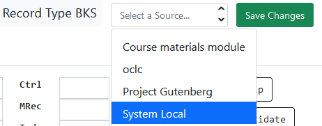

Slides available at:
slides.mobiusconsortium.org/blake/bib_magic
Created by Blake Graham-Henderson / blake@mobiusconsortium.org
Press ESC to browse slides

No actual Google synonyms were harmed during the making of this slide
Designed for compartmentalized MARC records per import project(s)
FTP / Cloud Library / MARCIVE HTTPS
Configure to change incoming MARC automatically
Add fields
Remove fields/subfields
Replace fields/subfields
Also works with control fields
For electronic imports: newly added libraries can be retro-actively added to existing 856's
You'll need access to the server
It's one Perl program

Standard command
./bib_magic_importer.pl --config overdrive.conf
Sync $9's
./bib_magic_importer.pl --config overdrive.conf --syncnines
Force match on 901c only
./bib_magic_importer.pl --config overdrive.conf --match_901c
| Option | Detail |
|---|---|
| logfile | Path to write a log |
| domainname | Evergreen's root domain name, mydomain.org |
| archivefolder | Writable folder path to store processed files |
| tempspace | Path to a temp folder; used for authority processing |
| incomingmarcfolder | Folder path for folder type import |
| dbhost | Postgres server host |
| db | PG Database name |
| dbuser | PG DB Username |
| dbpass | PG DB password |
| port | PG DB port |
| do_not_import_new | Don't allow new records to be imported |
recordsource
##########################################################
# Options are: FTP or folder or cloudlibrary or marcivehttps
# Note: cloudlibrary option enables the API connection to
# the remote server.
##########################################################
Examples:
recordsource = folder
recordsource = cloudlibrary
recordsource = FTP
recordsource = marcivehttps
Remote server stuff
| Option | Detail |
|---|---|
| server | FTP/cloudlibrary API URL |
| login | FTP username / cloudlibrary "Library ID" |
| password | FTP password / cloudlibrary "Library API Key" |
| remotefolder | Remote FTP folder |
| recurse | Optionally recurse FTP folders |
| lastdatefile | cloudlibrary only: path to writable file for cloudlibrary |
| certpath | cloudlibrary only |
| certkeypath | cloudlibrary only |
sourcename
###################################################################
# This is a way to keep track of the set of records in the
# database. This string value will be entered into
# config.bib_source if it doesn't exist. All imported
# records will be tagged with this string value as the source.
# NOTE: Auto record deduplication does not cross sources. Therefore,
# if you have multiple electronic MARC record imports, it could be
# a good idea to use the same source value for each such that the
# records can merge onto eachother. 856's are melted together each
# with the appropriate participant $9's.
##################################################################
Examples:
sourcename = overdrive
sourcename = electronic
sourcename

bibtag
Think of it as a record sub-category
############################################################
# This value is appended to the tcn_source when bibs
# are imported. Later, this is referenced during removals.
# Only bibs with this same tag will be scoped when searching
# for removals. import_as_is will cause this setting to be ignored
############################################################
Examples:
bibtag = overdrive_advantage
bibtag = gov_docs
tcn_source_authority
This needs to (almost) always be "yes"
You might want to disable this if you are importing records that you exported from Evergreen
participants
############################################################
# Comma separated list of shortnames for each of the
# branches/systems that will be included in the 856$9 values
############################################################
Examples:
participants = SYS1,SYS2
participants = BR1,BR2
participants = SYS1,BR2
merge_9s
#######################################################
# If there is a matching record in the database, and
# that matching record has an identical 856 with a matching
# $u, then we will merge all of the $9's together or not.
#######################################################
Examples:
# merge_9s = yes
merge_9s = yes
import_as_is
#######################################################
# Short circuit any code that would change the MARC
#
# You can optionally cause the software to do nothing
# to the marc and import as-is This is usually in
# conjuction with passing --match_901c to the script
#
#######################################################
Examples:
# import_as_is = yes
import_as_is = yes
Filename matching
These options help the script understand which file(s) you would like it to process. And if a file should be treated as a "removal" instead of an "add".
All options are space delimited
| Option | Detail |
|---|---|
| onlyprocess | AKA: magazine mrc |
| ignorefiles | AKA: .xls |
| removalfiles | AKA: weed removal delete |
| authorityfiles | AKA: authority auth |
authority_link_script_cmd
#######################################################
# When importing authority records, we will automatically
# run the linking script but we need to know where
# it is and the cmd switches
#######################################################
Example (line breaks for presentation):
authority_link_script_cmd =
/openils/bin/authority_control_fields.pl
--config /openils/conf/opensrf_core.xml
--record
eg_staged_bib_overlay_dir
#######################################################
# If you use this script to import authority files,
# you will also need to have the "eg_staged_bib_overlay"
# script available. This is where you define the path
# to the root folder.
# git repo
# https://github.com/EquinoxOpenLibraryInitiative/migration-tools
#######################################################
Example:
eg_staged_bib_overlay_dir = /path/to/migration-tools
Email notifications
All options are comma delimited
| Option | Detail |
|---|---|
| erroremaillist | Only alerts errors |
| successemaillist | People who want the success results |
| alwaysemail | Can only be one email address |
erroremaillist = admin@mydomain.org
successemaillist = cataloger@mydomain.org, data+fun@mydomain.org
alwaysemail = someone@mydomain.org
Adding Fields
marc_edit_standard_1 = 'type' => 'add',
'def' => ['650','0','0','a','Whatever you want to add']
Removing Whole Fields
marc_edit_standard_2 = 'type' => 'remove',
'def' => ['852','853','995']
Conditionally remove fields
marc_edit_standard_3 = 'type' => 'remove',
'howmany' => 'all',
'def' => ['856_4_none_3', '856_1_1_a', '651_all_all_b']
Removing subfields instead of whole fields
marc_edit_standard_4 = 'type' => 'removesubfield',
'howmany' => 'all',
'def' => ['756', 'q']
Replace
marc_edit_standard_5 = 'type' => 'replace',
'howmany' => 'all',
'def' => ['856','same','same','y','Click for online content.']
Control fields
marc_edit_control_1 = 'type' => 'replace', 'def' => ['008','24','o'] marc_edit_control_2 = 'type' => 'remove', 'howmany' => '1', 'def' => ['007'] marc_edit_control_3 = 'type' => 'replace', 'def' => ['007','1','vd cvaizq']
BIB Magic has it's own database schema: bib_magic
Bib Magic Job
Each import creates a "job" which is assigned a sequential ID number
| Table Columns |
|---|
| Start Time |
| Update Time |
| Status |
| Current Action |
| Current Action Number |
Bib Magic Import Status
Each job contains bib with details in this table
| Table Columns |
|---|
| Bib Tag |
| File Name |
| 001 |
| Title |
| SHA1 |
| Status |
| Processed |
| Update Time |
| MARC XML |
| Record ID |
Bib Magic MARC Update
When a bib is overlayed, it's recorded here
Makes the bib update reversable
| Table Columns |
|---|
| Record ID |
| Previous MARC |
| Changed MARC |
| New Bib? |
| Update Time |
Bib Magic Item Reassignement
If items are moved to another bib, it's recorded here
Makes the bib merge reversable
| Table Columns |
|---|
| Copy ID |
| Previous Bib ID |
| Destination Bib ID |
| Move Time |
Bib Magic BIB Merge
When two bibs are merged, it's recorded here
Makes the merge reversable
| Table Columns |
|---|
| Lead Record ID |
| Sub Record ID |
| Update Time |
Bib Magic Nine Sync
| Table Columns |
|---|
| Record ID |
| Nines Synced |
| Affected URL |
| Update Time |
Hi Team,
Thanks for your file(s). It took me some time to work on it:
0 days, 0 hours, 07 minutes and 30 seconds
I've digested the file(s):
--- ME-1075-20230224084143-Audio-1.mrc ---
147 Total record(s)
144 inserted
3 matched and overlayed
--- ME-1075-20230224084143-eBook-1.mrc ---
474 Total record(s)
462 inserted
12 matched and overlayed
--- Grand Total ---
621 Total
606 inserted
15 Record(s) were updated
Import Type: folder
Yours Truly,
The friendly MOBIUS server
Slides available at:
slides.mobiusconsortium.org/blake/bib_magic
Launchpad bug: LP 1947898